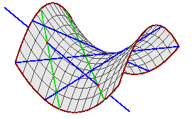

| The Shapiro conjecture is concerned with the solutions to geometric problems from the classical Schubert calculus of enumerative geometry. These geometric problems involve counting the number of linear subspaces of a vector space which satisfy certain incidence conditions with respect to other, fixed linear subspaces. The classic example of this is the number of lines in 3-space that meet four given lines in 3-space. There are 2, if the four lines are general. See below or this for a discussion. The picture at right is a figure showing the two green lines meeting four given blue lines. The hyperboloid is an auxiliary geometric figure to aid in the construction of the two green lines. |  |
The Shapiro conjecture asserts that if the fixed subspaces are chosen in a specified way, then all of the solution linear subspaces will be real. This special choice of the fixed subspaces is that they all osculate a rational normal, or moment, curve at real points. There is considerable evidence for this conjecture. Most notably, Eremenko and Gabrielov [EG00] have established the conjecture it when the solution linear subspaces are 2-dimensional (lines in the formulation in projective space). Impressive numerical evidence has also accumulated [So_WWW, So00a, V], and it holds asymptotically for special Schubert problems [So99].
The rational normal curve in n-space is a nondegenerate parametrized curve g(s) of degree n. There is a choice of basis for which it is the moment curve:
The first interesting case of the Shapiro conjecture occurs in 3-dimensional
space.
There, it concerns the lines in 3-space meeting four given tangent lines to
the rational normal curve that are tangent at real points.
That is, the case corresponding to the picture above.
You may follow this
link for a visual proof of this result.
While this problem of 4 lines is readily analyzed with the auxiliary
hyperboloid, there are no such aids for more general problems in the Schubert
calculus.
Thus these general problems are more difficult to analyze.
A different, algebraic, proof of this problem of four lines which may
generalize involves its discriminant.
Let s, t, u, and v be the four points on the
rational normal curve where the lines are tangent.
Then in the global Plücker
coordinates for the Grassmannian of lines in 3-space this problem may be
formulated as four linear equations
The discriminant of this last quadratic has a simple form
It rarely vanishes.
Since any automorphism of P1 (a Möbius
transformation) acts on the
parametrization of the rational normal curve without affecting the geometry of
this problem and so we may freely choose values for any three of the parameters
s, t, u, v.)
We take the values of t, u, and v to be the three cube
roots of 1.
Then the discriminant becomes 144s, and so we see that
the discriminant vanishes when we also have s=0.
Furthermore, it vanishes only for parameter values on
P1 equivalent to this set
(0 and the three cube roots of 1).
under a Möbius transformation.
One may check the equations to see that this selection gives a double solution,
so that the fourth tangent line to the rational normal curve is tangent
to the resulting hyperboloid.
This special four-tuple was first observed by Eisenbud and Harris in Section 9
of [EH].
Before we close this discussion of Shapiro's conjecture, note that we show
this discriminant to non-negative by expressing it as a sum of squares.
Every discriminant that has been computed has similarly been shown to be a sum
of squares.
This is unexpected, as non-negative polynomials cannot always be written as
a sum of squares.
It suggests that there is a deeper reason for these discriminant having this
form, and elucidating that may be a way to prove the Shapiro conjecture.
p23
- 2sp13
+ 3s2p12
+ s2p03
- 2s3p02
+ s4p01
= 0 ,
p23
- 2tp13
+ 3t2p12
+ t2p03
- 2t3p02
+ t4p01
= 0 ,
p23
- 2up13
+ 3u2p12
+ u2p03
- 2u3p02
+ u4p01
= 0 ,
p23
- 2vp13
+ 3v2p12
+ v2p03
- 2v3p02
+ v4p01
= 0 ,
0 =
2 p02 -
e1
p01
0 =
p03
+ 3 p12
- e2
p01
0 =
2 p13
- e3
p01
0 =
p03
- e4
p01
0 =
12 p122
- 4 e2
p01
p12
+ (e1
e3
- e4)
p012
Up:
Table of Contents
Back:
Overview